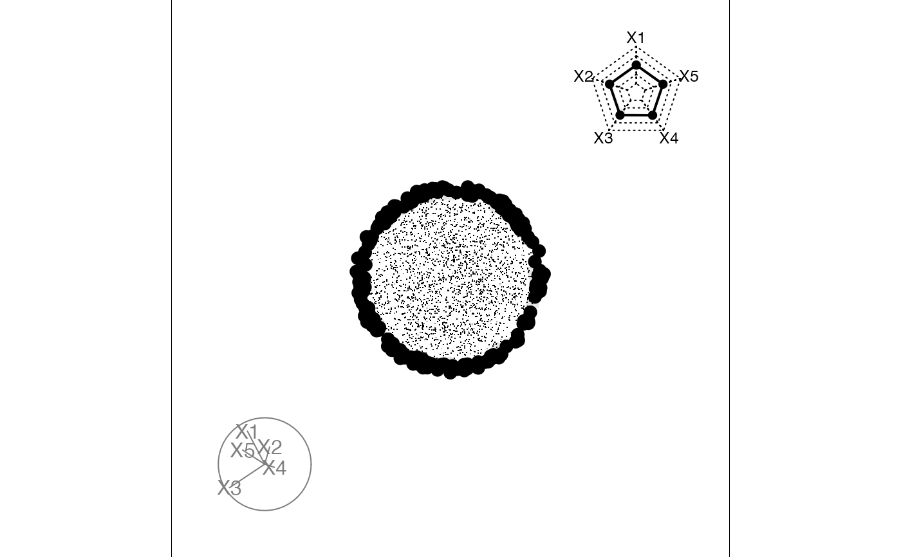

The manual slice tour takes the current projection, with display_slice, and changes the slice center.
manual_slice(
data,
proj,
var = 1,
nsteps = 20,
v_rel = 0.01,
rescale = FALSE,
sphere = FALSE,
col = "black",
half_range = NULL,
anchor_nav = "topright",
palette = "Zissou 1",
...
)numeric matrix, with n rows and p columns
projection from which slices are constructed
variable axis to run the center along: 1, ..., p
number of changes in center to make
relative volume of the slice. If not set, suggested value is calculated and printed to the screen.
Default FALSE. If TRUE, rescale all variables to range [0,1]?
if true, sphere all variables
color to use for points, can be a vector or hexcolors or a factor. Defaults to "black".
half range to use when calculating limits of projected. If not set, defaults to maximum distance from origin to each row of data.
position of the anchor: center, topright or off
name of color palette for point colour, used by hcl.colors, default "Zissou 1"
other options passed to output device
# Note that you might need to use the quartz()
# on OSX to see the animation
sphere5 <- data.frame(geozoo::sphere.hollow(5)$points)
proj <- basis_random(5, 2)
manual_slice(sphere5, proj, var=3, nsteps=10, rescale=TRUE, half_range=1.5)
#> Converting input data to the required matrix format.
#> Using v_rel=0.01, corresponding to a cutoff h=0.22
